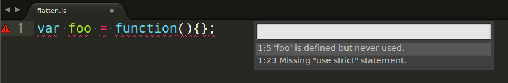

JavaScript creation
- Netscape, May, 1995 - LiveScript(later is called JavaScript );
- 10 days for lexer, parser, compiler, ...;
- June, 1996 - JScript (JavaScript from Microsoft);
- November, 1996 - EcmaScript

Brendan Eich
Origin of JavaScript
History of EcmaScript
- EcmaScript (November 1996)
- EcmaScript 3 (December 1999)
- EcmaScript 4 (abandoned July 2008)
- EcmaScript 5 (December 2008)
- EcmaScript 6 (planned summer 2015)
General aspects
Automatic Semicolon Insertion
(function(w) {
function my(options) {
var myArr = []
console.log('test')
(myArr || []).forEach(function(i) {})
return
{
attr: 'something'
}
}
})(window)
How parser looks at it:
(function(w) {
function my(options) {
var myArr = [];// (1) <- inserted
// (2) Not inserted, lines got merged
console.log('test')(myArr || []).forEach(function(i) {});
return;// (3) <- inserted, breaks the return statement
{
attr: 'something'
}; // (4) <- inserted
}
})(window)Strict mode
'use strict';
012; // will cause a SyntaxError
eval('010'); // TypeError
var_which_is_not_declared = 1; //ReferenceError
(function(a){
arguments.callee;// TypeError
arguments.caller;// TypeError
})(1)
function f(x, x) { }// is a SyntaxError - duplicate parameters
*IE9(and lower)- ignore such directive
Coding Style

Linting utilities to use
- JSHint
- ESLint

Core JavaScript
Variables
var localVar = 123,
anotherLocalVar = 345;
unexpectedGlobalVar = 567;
/*
* Variables in JavaScript can consist letters, numbers and symbols $ and _
* Variables cannot be started with number
* Variable cannot have the same name, as any Javascript reserved word
* - the list of reserved words
*http://developer.mozilla.org/docs/Web/JavaScript/Reference/Reserved_Words
*/
var MY_PI = 3.14, // constant, just our agreement
$123 = 123, // correct
my-var = 123, // incorrect
3abc = 321, // incorrect
_ = 5; // correct
Reserved Words
break delete function return typeof
case do if switch var
catch else in this void
continue false instanceof throw while
debugger finally new true with
default for null try
Additionally in ES5
class const enum export extends import super
Additionally in Strict Mode
implements let private public yield
interface package protected static
String
var newString = "My string",
alsoNewString = 'Another string',
usingConstructor = new String("Something else");//not recommended
'Hello' + ' world' // => 'Hello world'
'abc'.indexOf('b') // => 1
'some sequence'.charAt(5) // => 's'
'hello'.length // => 5
'June,July,August'.split(',') // => ['June', 'July', 'August']
'abcde'.slice(1,3) // => 'bc'
'abcde'.slice(1, -1) // => 'bcd', !!!<IE8
'Hello world'.substr(1,4) // => 'ello'
'HeLLo WoRld'.toLowerCase() // => 'hello world'
'Hello world'.replace('l', 'g') // => "Heglo world"
'Hello world'.replace(/l/g, 'g') // => "Heggo worgd"
String.fromCharCode(1072) // => 'a'
'азбука'.charCodeAt(0) // => 1072
'z' > 'a' // true
Number
64-bit format, standart IEEE 754
var num = 123,
alsoANumber = new Number(567);// not recommended
0xAA // 170 in hexadecimal
010 // 8 in octal
2e5 // 200000
1/0 // Infinity
1e1000 // Infinity
'a' * 1 // NaN
isNaN('abc') // true
isFinite(123) // true if value is not NaN or Infinity
123.45678.toFixed(2) // "123.46"
0.1 + 0.2 // 0.30000000000000004
parseInt('010') // 8
parseInt('0x10') // 16
parseInt('010', 10) // 10
Module Math
Math.random() //0.1099012941122055 - random number between 0 and 1
Math.ceil(3.1) // 4 - rounded upwards to the nearest integer
Math.floor(3.99) // 3 - rounded downwards to the nearest integer
Math.round(3.4) // 3 - rounds x to the nearest integer
Math.round(3.5) // 4
Math.abs(-2) // 2 - returns the absolute value of x
Math.max(x,y,z) // returns the largest argument
Math.min(x,y,z) // returns the smallest argument
Math.sqrt(3) // The square root of 3
Math.pow(2, 3) // 8 - returns the value of 2 to the power of 3
Math.sin, Math.cos, Math.tan // Trigonometric functions
Math.PI // 3.141592653589793 - Returns PI
// and many other useful functions...Boolean
Everything is true, except:
- 0
- null
- ""
- false
- undefined
- NaN
if (new Boolean(false)) {
console.log('Hello');
}
// 'Hello'
Boolean("") // false - better
var a = null;
!!a // false
Objects as Hash
var obj = {},
anotherObj = new Object();
obj.hello = world;
obj['123'] = 345;
obj.hello; // world
obj['123']; // 345
delete obj.hello;
for (var i in obj) {
if(obj.hasOwnProperty(i)){
console.log(i);
}
}
'prop' in obj // false
var obj = {a: 1},
anotherObj = obj;
anotherObj.a = 3;
obj.a; // 3
Array
var arr = [1, 2, 'any string', {a: 1}],
arr2 = new Array('a', 'b', 'c'),
arr3 = new Array(3); // [undefined, undefined, undefined],
matrix = [[1, 2, 3, 4], [5, 6, 7, 8]];
arr.length; // 4
arr[1] = 3;
arr; // [1, 3, 'any string', {a: 1}]
matrix[1][2]; // 7
var arr = [];
arr[1000] = 0;
arr.length; // 1001
var arr = [1, 2, 3, 4, 5, ...... 100000000];
for(var i = 0, l = arr.length; i < l; i++) {
console.log(arr[i]);
}
var arr = [];
arr[1]= 123;
arr[100] = 456;
for(var i in arr){
if (arr.hasOwnProperty(i)){
console.log(arr[i]);
}
}Array's methods
var arr = [7, 5, 2];
delete arr[1] // [7, undefined, 2] oops
arr.splice(1, 2, "some el", 5); // [undefined, 2]
arr // [7, "some el", 5]
arr.slice(2, 3); // [5]
[1, 2, 3].concat([4, 5, 6]); // [1, 2, 3, 4, 5, 6];
var arr = [7, 2, 5];
arr.pop(); // 5 arr => [7, 2]
arr.push(3); // 3 arr => [7, 2, 3]
arr.shift(); // 7 arr => [2, 3]
arr.unshift(10); // 3 arr => [10, 2, 3]var a = [1, 2, 5, 10];
a.sort(); // [1, 10, 2, 5] oops
a.reverse(); // [5, 2, 10, 1]
a.sort(function(a, b){
return a - b;
}); // [1, 2, 5, 10]Array's methods (ES5)
var arr = [1, 'some el', 5, 4], tmp = {};
arr.forEach(function(el){
tmp[el] = el;
});
tmp // Object({1: 1, 'some el': 'some el', 5: 5, 4: 4})
[1,2,3,4,5].every(function(n){return n < 10;}); // true
[1,2,3,4,5].some(function(n){return n < 2;}); // true
[1,2,3,4,5].filter(function(n){return n > 3;}); // [4, 5]
var items = [
{id: 1, name: 'John'},
{id: 2, name: 'Bob'},
{id: 3, name: 'Bill'}
];
items.map(function(el){return el.id;}); // [1, 2, 3]
[1,2,3,4,5].reduce(function(x, y){return x + y;}); // 15
es5-shim contains all EcmaScript 5 methods that can be faithfully emulated with a legacy JavaScript engine.
Equality
0 == "" // true
0 == "0" // true
false == "0" // true
false == undefined // false
false == null // false
null == undefined // true
" \t\r\n" == 0 // true
0 === "" // false
0 === "0" // false
false === "0" // false
false === undefined // false
false === null // false
null === undefined // false
" \t\r\n" === 0 // false
{} === {}; // false
new String('foo') === 'foo'; // false
new Number(10) === 10; // false
var foo = {};
foo === foo; // true
Type casting
// to String
'' + 10 // '10'
'' + {} // "[object Object]"
'' + {toString: function(){ return "Hello";}} // "Hello"
'' + true // 'true'
'' + undefined // 'undefined'// to Number
+'10' // 10
+'a' // NaN
+undefined // NaN
+null // 0// to Boolean
!!undefined // false
!!null // false
!!123 // true
!!0 //false
!!NaN //false
!!"123" // true
!!"0" // true, pay attention
!!"" //false
!!{} //trueundefined and null
var a,
b = function(){},
c = function(){ return; },
d = { x: undefined };
a // undefined
b() // undefined
c() // undefined
d.a // undefined
d.x // undefined
(function(something, foo, undefined) {
// local undefined
return foo || undefined;
})('Hello World', 42); //42
ES5 strict mode: undefined is read only
typeof and instanceOf
//objects
var Person = function() {}
var tom = new Person();
console.log(typeof(tom)); // "object"
tom instanceof Person // true
//literals
var str = 'hello world';
console.log(typeof(str)); // "string"
str instanceof String // False
var str2 = new String('hello world');
console.log(typeof(str2)) // "object"
str2 instanceof String // true
// Using of typeof
if (typeof anyVar !== 'undefined') {...}
if (anyVar) {...} // ReferenceError , if anyVar is not definedRegExp
var regexp = /hello/gi,
theSameRegexp = new RegExp('hello', 'gi');
'I\'m going to say you "hello"'.search(/hello/g) // 22
'I like using Windows'.replace(/windows/i, 'Linux')
// "I like using Linux"
/^\d+$/.test("Expected numeric value") // false
var re = /(\w+)\s(\w+)/;
"John Smith".replace(re, "$2, $1"); // "Smith John"
function f2c(x) {
function convert(str, p1) {
return ((p1-32) * 5/9) + "C";
}
if (typeof x !== 'string')
throw new Error('Expected string');
var re = /^(\d+(?:\.\d*)?)F$/g;
if (!re.test(x))
throw new Error('Incorrect Fahrenheit degree');
return x.replace(re, convert);
}
Manual on javascript.ru
Exceptions
var myMegaObject = {};
(function() {
try {
myMegaObject.a.b;
} catch(e) {
console.log(e);
} finally {
console.log('I\'m executed anyway');
}
})()
//"TypeError {}"
//"I'm executed anyway"
function dummyFuncJustForFun(flag){
if (!flag)
throw new Error('I need a flaaaaag');
console.log('Executing is finished');
}
dummyFuncJustForFun(); // Error: I need a flaaaaag
Functions
Function Declaration
createObject(); // Object
function createObject() {
return {};
}
function(){}(); // SyntaxError: Unexpected token (
function a(){}(); // SyntaxError: Unexpected token )
+function(){}(); // NaN
Function Expression
func(); // TypeError: undefined is not a function
func2(); // ReferenceError: func2 is not defined
var func = function() { return 123; },
b = func;
console.log(func) // Object
b(); // 123
var anotherFunc = function(a, b) {
var c = 5;
console.log(a);
console.log(b);
};
anotherFunc(2);
// 2
// undefined
console.log(c); // ReferenceError: c is not defined
Named Function Expression
var foo = function bar() {
bar(); // works
}
bar(); // ReferenceErrorClosure
function counterConstructor(arg1, arg2) {
var count = 0,
myVar = 1,
_constr = function inner(){
//console.log(myVar);
return ++count;
};
myVar = 2;
return _constr;
};
var counter = counterConstructor();
counter(); // 1
counter(); // 2for (var i = 0; i < divs.length; i++) {
//(function(i)
divs[i].onclick = function() {
console.log(i);
}
//)(i)
}arguments
var argumentsDetector = function() {
for (var i=0; i < arguments.length; i++) {
console.log('Argument ' + i + ': ' + arguments[i]);
}
};
argumentsDetector('a', 123, {c: 1});
//Argument 0: a
//Argument 1: 123
//Argument 2: [object Object]
function a() {
console.log(arguments.callee);
console.log(arguments.callee.caller);
}
function b() {
a();
}
//Reference to a
//Reference to bPrototype chain
if (typeof Array.prototype.myMethod === 'undefined') {
Array.prototype.myMethod = function(){
// put your code here
};
}
Example with __proto__
var alien = {kind: 'alien'},
person = {kind: 'person'},
zack = {};
zack.__proto__ = alien; // assign alien as the prototype of zack
console.log(zack.kind); //=> 'alien'
console.log(alien.isPrototypeOf(zack)); //=> true
zack.__proto__ = person;
console.log(zack.kind); //=> 'person'
zack.kind = 'zack';
console.log(zack.kind); //=> 'zack'
console.log(person.kind); //=> 'person'

Object.create
__proto__ is not a well supported way of assigning prototypes to objects.
Object.create is available in ES5, but old browsers / engines can be shimmed using this es5-shim.
var person = {
kind: 'person'
}
var zack = Object.create(person, {age: {value: 13} });
console.log(zack.age); // => '13'
console.log(zack.kind); // => 'person'
Object.getPrototypeOf(zack); // => 'person'
Object.create shim
function create(prototype, properties) {
var object;
function F() {} // An empty constructor.
if (prototype === null) {
object = createEmpty();
} else {
if (typeof prototype !== 'object'
&& typeof prototype !== 'function') {
throw new TypeError('Object prototype may only be an Object or null');
}
F.prototype = prototype;
object = new F();
object.__proto__ = prototype;
}
if (properties !== void 0) {
Object.defineProperties(object, properties);
}
return object;
};

Constructors
function Foo() {
this.bla = 1;
}
Foo.prototype.test = function() {
console.log(this.bla);
};
var f = new Foo();
f.test(); // 1
Foo(); //undefined// constructor
var Gadget = function () {};
// a static method
Gadget.isShiny = function () {
return "you bet";
};
// a normal method added to the prototype
Gadget.prototype.setPrice = function (price) {
this.price = price;
};
// calling a static method
Gadget.isShiny(); // "you bet"
// creating an instance and calling a method
var iphone = new Gadget();
iphone.setPrice(500);this
var person = {
_name: 'Коля',
talk: function() {
console.log('My name is ' + this._name);
}
};
person.talk();// 'My name is Коля' var Person = function(name){
this._name = name;
this.talk = function() {
console.log('My name is ' + this._name);
};
},
person = new Person('Коля');
person.talk();// 'My name is Коля' var func = person.talk;
func(); // 'My name is undefined'apply and call
var person = {
_name: 'Коля',
talk: function() {
console.log('My name is ' + this._name);
}
},
showName = function(place, time) {
console.log(['Person', this._name, 'came to the', place, 'at', time].join(' '));
};
showName.call(person, 'shop', '10am'); // 'Person Коля came to the shop at 10am'
showName.apply(person, ['shop', '10am']); // The same
showName.call(null, 'shop', '10am'); // The same as showName.call(window, 'shop', '10am');function g() {...}
function f(a, b) {
g.apply(this, arguments);
} var argumentsDetector = function() {
console.log('Arguments: ' + [].slice.call(arguments).join('; ');
};
argumentsDetector('1', 2, 'afff'); //Arguments: 1; 2; afffFunction.prototype.bind()
var person = {
_name: 'Коля',
talk: function() {
console.log('My name is ' + this._name);
}
},
showName = function(place, time) {
console.log(['Person', this._name, 'came to the', place, 'at', time].join(' '));
},
showPersonName = showName.bind(person),
showPersonNameAtWork = showName.bind(person, 'work');
showPersonName('shop', '10am'); // 'Person Коля came to the shop at 10am'
showPersonNameAtWork('9am'); // 'Person Коля came to the work at 9am'
Factory constructor pattern
function Bar() {
var obj = {};
obj.value = 'blub';
var private = 2;
obj.someMethod = function(value) {
this.value = value;
}
obj.getPrivate = function() {
return private;
}
return obj;
}
Bar(); Classical inheritance with Object.create
// Shape - superclass
function Shape() {
this.x = 0;
this.y = 0;
}
// superclass method
Shape.prototype.move = function(x, y) {
this.x += x;
this.y += y;
console.info('Shape moved.');
};
// Rectangle - subclass
function Rectangle() {
Shape.call(this); // call super constructor.
}
// subclass extends superclass
Rectangle.prototype = Object.create(Shape.prototype);
Rectangle.prototype.constructor = Rectangle;
var rect = new Rectangle();
rect instanceof Rectangle; // true
rect instanceof Shape; // true
rect.move(1, 1); // Outputs, 'Shape moved.'
Immediate function
(function( window, undefined ) {
// Put your code hre
})(window);Immediate object initialization
({
width: '600px',
height: '400px',
getParams: function() {
retutn {
width: this.width,
height: this.height
};
},
init: function(){
console.log('Initializing....');
// more init code
}
}).init();Etc....
//Self-defining functions
var func = function(){
console.log('pre init');
func = function(){
console.log('init code');
};
};
func(); // pre init
func(); // init code//Currying
function curry(x){
return function(y){
return x + y;
}
}
curry(4)(5); // 9//Memoization
var func = function (param) {
func.cache = func.cache || {};
if (!func.cache[param]) {
var result = {};
// ... expensive operation ...
func.cache[param] = result;
}
return func.cache[param];
};Timers
var timerId = setTimeout(function(){
alert('Hello');
}, 1000),
timerId2 = setTimeout("alert('Hello')", 1000);
clearTimeout(timerId);
clearTimeout(timerId2);var timerId = setInterval(function(){
console.log('Hello');
});
clearInterval(timerId);var result;
function showResult() {
alert(result);
}
setTimeout(showResult, 0);//setImmediate(func) as alternative technique
result = 2*2;Client-Side JavaScript Overview
The main things, that JavaScript can do:
- Work with DOM(create, delete, hide elements);
- Detect user's actions (mouse clicks, cursor's moving, typing, etc...);
- Show messages, set cookies, send http request;
JavaScript cannot do:
- Doesn't has direct access to the file system/memory;
- Doesn't has an access to another opened tabs (if they weren't opened by current tab);
- Limited cross-domain access;
Client-Side Declaration
<!DOCTYPE HTML>
<html>
<head>
<meta charset='utf-8'/>
</head>
<body>
<script src='http://code.jquery.com/jquery-latest.min.js'></script>
<script>alert('Hello world');</script>
</body>
</html>
Javascript alternatives
Java applets
<applet codebase="http://amrood.com/applets" code="HelloWorldApplet.class" width="320" height="120">
</applet>
- It behaves as a standalone application, requires user's signature, because it could be dangerous;
- It requires installed Java environment at user's machine;
- It requires more time for loading;
- It can call JavaScript functions;
Adobe Flash
<object classid="clsid:d27cdb6e-ae6d-11cf-96b8-444553540000" width="300" height="120" codebase="http://fpdownload.adobe.com/swflash.cab#version=9,0,0,0">
</object>
- Have a great capabilities to work with network, images, video, audio;
- It should be installed and turned on;
Dart
- Classes, interfaces, types;
- Dart editor for creating, debugging apps;
- Dart package manager (huge amounts of dart libraries);
- Could be run at:
- dart2js and run at any browser;
- dartVM at server-side;
- Dartium: Chromium with an embedded Dart VM;
CoffeeScript and TypeScript
Superset of JavaScript that compiles to plain JavaScript.